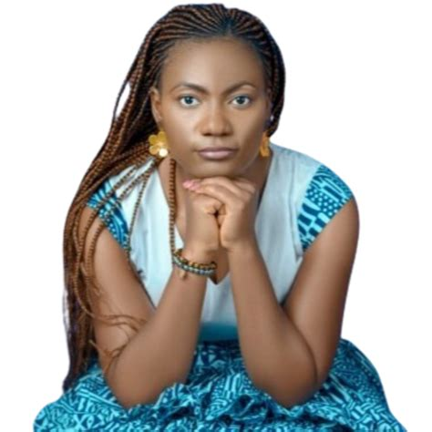

Foutse Yuehgoh
Cnam (doctorat)
Biographie
Foutse Yuehgoh est chercheuse en intelligence artificielle et spécialiste de la science des données. Après des études en mathématiques et en informatique au Cameroun, elle s’est spécialisée en science des données à AIMS Sénégal puis en traitement de l’information à l’Université Paris-Saclay. Elle a poursuivi en doctorat au Conservatoire national des arts et métiers (Cnam), en partenariat avec Coexel et le De Vinci Research Center.
Dans sa recherche doctorale, elle a étudié les graphes multiplexes pour recommander des documents ou des contenus. Chaque couche du graphe représente un type de relation ou d’interaction. En combinant ces couches, ses travaux cherchent à mieux caractériser les préférences des utilisateurs et à tenir compte de plusieurs critères à la fois. Chez Coexel, elle a appliqué ces approches à la veille documentaire et à la recommandation d’articles.
Elle a également conçu des outils d’extraction et de recherche d’informations dans des documents réglementaires. Elle a prolongé son travail sur les graphes de connaissances en structurant des décisions de justice et des textes de droit des affaires de l’OHADA. En parallèle, elle a contribué à l’évaluation de modèles sur des langues africaines et sur des questions médicales issues de contextes africains.
Elle accompagne des projets étudiants en IA et a créé KmerAI pour rendre le domaine plus accessible au Cameroun, notamment aux femmes et aux jeunes. Elle participe également à l’organisation d’IndabaX Cameroon.
Domaines de recherche
- Apprentissage sur graphes
- Graphes de connaissances
- Systèmes de recommandation
- Traitement automatique des langues